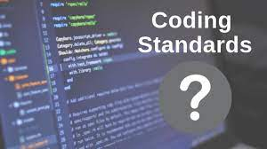

In our final project this semester, I dove into the world of open source software, engaging with a process where code is openly shared for anyone to view, modify, and distribute. Using GitHub, I experienced firsthand the dynamics of contributing to a shared codebase. This approach brought diverse perspectives and creativity to our project, especially when working in a collaborative team. GitHub Desktop enhanced our flexibility, allowing us to seamlessly add missing features or tweak existing ones. This experience showed me how the principles of open source are integral to software development beyond just web applications, like in desktop software, mobile apps, embedded systems, and even game development.
I also discovered the versatility of Issue Driven Project Management (IDPM), especially in contexts like mobile app and game development. In mobile app development, where frequent updates and diverse operating system requirements are the norm, IDPM proved ideal for managing and swiftly adapting to these needs. We could break down tasks into focused, manageable issues, enabling us to keep pace with the fast-evolving mobile technology landscape.
In game development, the IDPM approach shone through in managing intricate aspects such as gameplay mechanics, graphics, sound design, and level design. By dividing these components into smaller, more manageable tasks, we could ensure consistent progress and regularly integrate feedback. This method was particularly beneficial in the creative and iterative process of game development, helping us craft engaging and polished games.
During our project in open source software development, we started using ESLint, and it made a huge difference. ESLint is a tool that helps you write better JavaScript code. For me, using ESLint was like having a guide by my side. It didn’t just point out mistakes; it showed me how to do things the right way in JavaScript. Adding ESLint to our project was a smart decision. It automatically checked our code and made sure we all wrote code in the same style. This was really important because we all had different ways of writing code, and ESLint helped us avoid confusion and mistakes.
The benefits of using ESLint were clear right away. It caught small mistakes before they turned into big problems. But more than that, it taught us how to be better at coding. In many team projects, it’s hard for everyone to follow the same rules, but ESLint made it easier. It wasn’t just checking our code; it was teaching us good habits in JavaScript. This was a huge help. It didn’t just make our code better; it made us better as coders. ESLint was more than a tool for us. It brought our different coding styles together and helped us work better as a team. This was really important for the success of our open source project.
